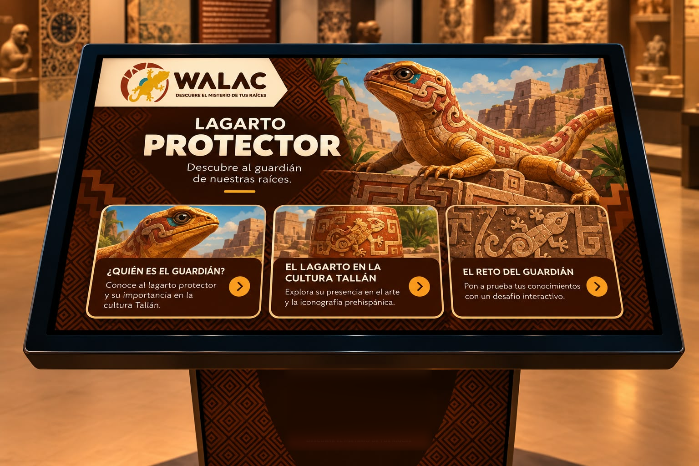
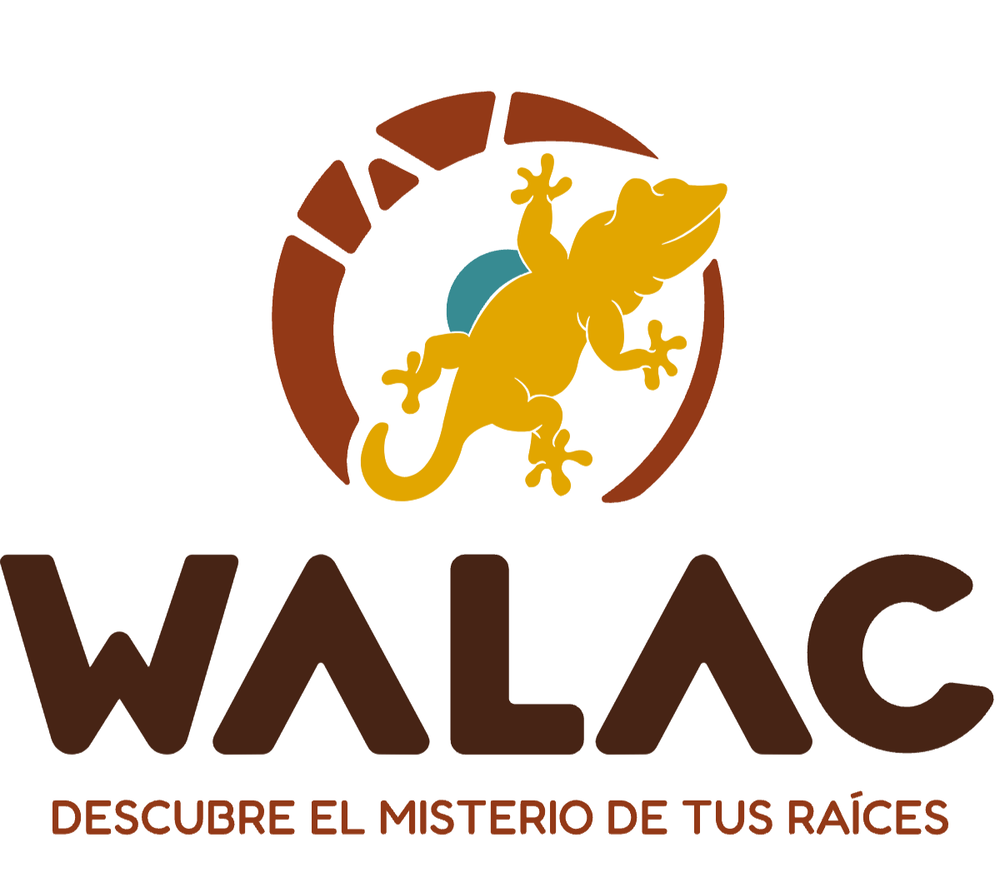
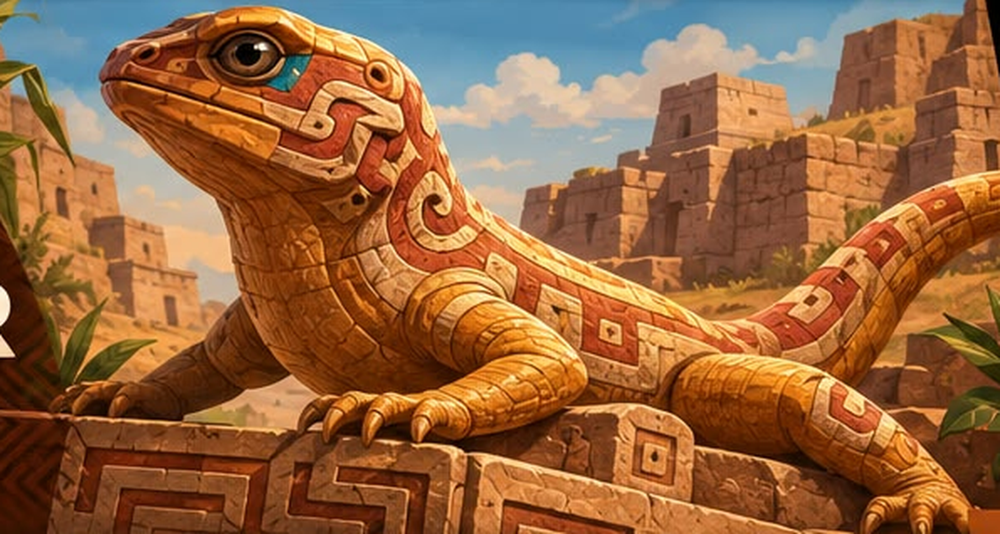

LAGARTO
PROTECTOR
Descubre al guardián de nuestras raíces.
WALAC MUSEO · LAGARTO PROTECTOR01 · ¿QUIÉN ES EL GUARDIÁN?
El guardián de WALAC
El lagarto es el personaje que representa la protección y la conexión con nuestras raíces dentro de WALAC Museo.
Inspirado en la fauna y la iconografía ancestral, este guardián acompaña a los exploradores en el descubrimiento de la cultura Tallán.
El guardián te acompaña en cada sala para que descubras el misterio de tus raíces.
 WALAC MUSEO · CULTURA TALLÁN
WALAC MUSEO · CULTURA TALLÁN02 · EL LAGARTO EN LA CULTURA TALLÁN
Huellas de una cultura
Los animales y la naturaleza estuvieron presentes en las expresiones artísticas de las sociedades prehispánicas.
A través de representaciones y motivos geométricos, podemos explorar cómo los antiguos habitantes de la región expresaban su relación con el entorno.
El lagarto protector es una figura simbólica de la propuesta de WALAC Museo; no representa una deidad Tallán históricamente documentada.
WALAC MUSEO · EL RETO03 · EL RETO DEL GUARDIÁN
¡Demuestra cuánto sabes!
¿Estás listo para superar el desafío? Responde preguntas sobre la cultura Tallán, descubre nuevos datos y demuestra tus conocimientos. ¡Cada respuesta te acerca a convertirte en un verdadero explorador de WALAC Museo!
0/4